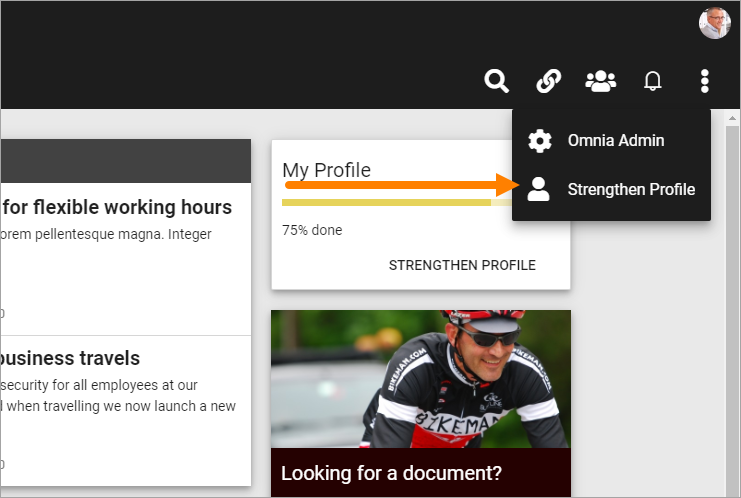
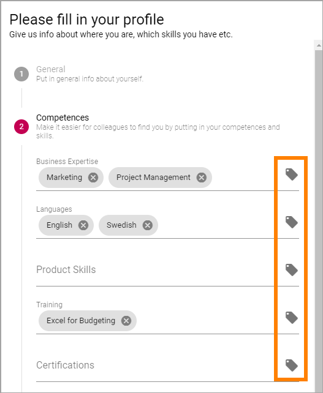
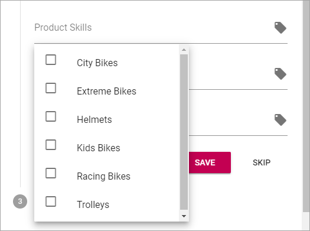
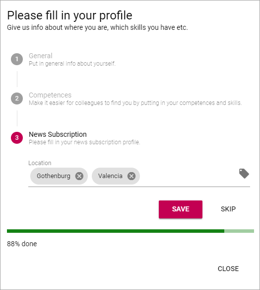

Strengthen Profile¶
To make it easier for users to complete the most important parts of their profile, a Strengthen Profile option can be made available.
The option can be available in the Action Menu:
The option can also be made available through a block, on any page.
Here’s an example of what the user will see:

The steps are numbered, the active step marked with a color (in the above example red).
If this icon is present, the user can add a comment:
Do the following:
- Make the necessary changes.
- Click “Save” if changes has been made, or “Skip” if not.

- To go to the next step, click the step.
Here’s an example of step 2:

To remove a post in a field, click the x.

To add a post to a field, click this icon:
A list is shown where you can select the post/posts you want to add, for example:
Normally, several posts can be selected.
To close a list, click outside it.
- Make the necessary changes.
- Click “Save” if changes has been made, or “Skip” if not.
- To go to the next step, click the step.
Here’s an example of step 3:
- Do the same here; click the x to remove, click tag icon to add.
- Save or skip when you’re done.
- To close the option, click “Close”.

Settings for Strenghten Profile¶
All settings are done in Omnia Admin, see: User Profile Completion